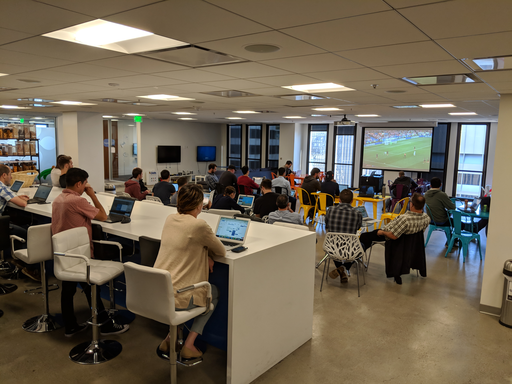

I got a book, The Non-Technical Guide to Web Technologies. This is where I understood 3 paths. Front end. Back end. Data science. Unsure of what path I wanted, I enrolled myself in the general courses for all disciplines at City College of San Francisco. Front end: HTML/CSS; Back end: Java, Linux, Shell Scripting; Data science: Python and SQL.
I began doing informational interviews with people in the industry. I would search my network, looking for people I knew, this got me interviews with CTO’s, Directors of Product, of companies I’d want to work for. I asked what their story was. The takeaway was data science, they told me to go where the puck was going, not where it is (backend/frontend). My philosophy degree was laughed at by one director, the message I got from that, is the importance of technical proof; masters, certs, recommendations. You need to prove you know your shit. You need a portfolio, passion projects, a personal website and blog. From this the idea of having a community started to seem more and more important. It’s one the reasons that gravitated me to the site you’re reading now. As students of the tech game, we need friends and a community to grow with. The other take away from a COO I talked to, is to get in the game.
Working at Trader Joe’s is great, but all successful people I spoke to told me how they went to school full time and worked full time. It’s important to have the experience to backup the schooling. Going to hard one way won’t be enough. So my questions became ‘how do I get in the game?’ Your network and position. The easiest transition is to start at a startup, they’re willing to take a shot on you. You’ll get paid more than your worth because of the risk associated. Try and get in at Series C funding, that means the company is profitable but still in the stage that you get equity. I’ve found usually if the company is past Series C funding, they don’t offer equity to new hires. As far as the role. If you want to transition into a technical role from your schooling, I was suggested to go into 3 possible roles. 1. QA, stands for quality assurance. Every company has manual QA’ers and QA engineers. I’ve seen many manual QA’ers at my current company turn into Dev QA’s, from there they go to become a developer. Once you have experience as a developer you can then pivot into a more established company and shoot for the bigger bucks. I’ve been told to change companies every 1-2 years. With every new hire your salary can increase up to 30% sometimes. That will almost assuredly beat the 5% raise you may get per year at a company. Move around a lot in your first 5 years, then get in to a big fish company and coast for a bit.
2. Help desk. You spend all day troubleshooting and setting up equipment, it’s a great way to meet everyone in the company, connections that can help you out in the future. It’s a job with projects that you could start practicing your technical skills in. 3. Customer support. Many of my friends who took this route told me it’s shitty, but once you get to that next level of technical support, you then begin to work on technical problems internally, a great intro into becoming a developer while you still go to school.
QA, Helpdesk, Customer Support. If you can work 45 hours a week at a tech start up while going to school, this is what I’ve been told will get me in the big leagues. The only way to get these entry level positions is through a friend or contacting the hiring manager on Linkedin. Sending your resume to die in the companies internal system won’t work. See where your friends work at on Linkedin. Invite them to dinner, make your intentions clear about getting a referral. Usually these companies give you $1,000 if you successfully refer a friend. So it’s in the interest of your friend to hook it up for you. By referring someone you save your company a lot of time and usually if you’re good it's an easy vouch that your friend is good. If you don’t have any friends, find who the hiring sourcer is for the position you want. Message them on linkedin. They’ll usually phone screen you. I can write a whole other post on how to interview, but these are the 2 sure fire ways to get a job in San Francisco tech.
After working at Trader Joe’s for 6 months, going to school full time; I’m now working at a tech start up. The perks are stupid; free breakfast, lunch, video games, jackets, massages and working on the 37th floor overlooking the city and bay. I’m trying to finish all pre-reqs in efforts to get a masters at Berkeley in Data Science. I still network actively, my friends in the industry are waiting for my 6 month-1 year mark to try and make a move to their company. When working in a company your first 6 months are vital and set the tone for your career there. Make sure you work your ass off, always be willing to do what no one else wants to do, don’t piss anyone off, be modest about your efforts, try to be the first one in last one out. It’s all a big game, hope my experience can help you.